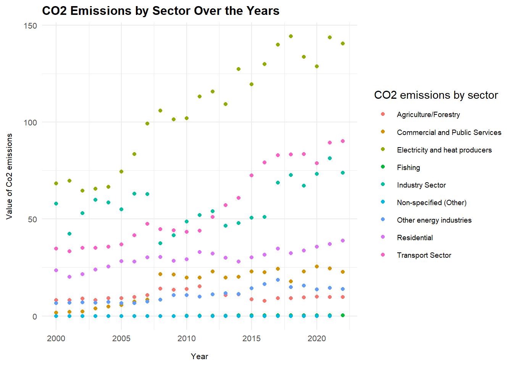

Sustainability Goals in Türkiye: Energy, Emissions, and the Future
1. Project Overview and Scope
Energy production and consumption are among the primary drivers of climate change, as they are major sources of carbon emissions. The continuous rise in energy demand, fueled by economic growth and industrialization, directly accelerates carbon emissions. In this study, we aim to investigate the relationship between energy consumption and carbon emissions originating from the energy sector in Turkey over the years.
First, correlation and regression analyses will be conducted to reveal the linear relationship between energy consumption and carbon emissions. Then, time series analysis will be applied to evaluate the trends of emissions and energy consumption over the years, the sectoral distribution of carbon emissions from the energy sector will also be examined, with a particular focus on emissions from electricity generation due to its dominant share.
Additionally, the relationships between key indicators—such as energy intensity (primary energy consumption/GDP), per capita energy consumption, and per capita carbon emissions—will be analyzed to assess the potential for decoupling carbon emissions from economic growth.
The data obtained from TÜİK provide information on the sectoral distribution of carbon emissions in Türkiye over the years, as well as GDP figures necessary for calculating energy intensity. Additionally, the data gathered from the IEA include Türkiye’s total primary energy supply, annual energy amounts by source, energy-related carbon emissions, the carbon intensity of the energy mix, per capita carbon emissions, electricity generation and consumption figures, and the share of renewable energy sources in electricity generation.
2.3 Reason of Choice
This study has been selected with the aim of contributing to sustainable development goals in line with energy and climate policies.
In order to shed light on the extent to which carbon-free growth is achievable and how Turkey’s trends over the years align with these goals, this topic has been chosen from the perspectives of energy, environment, and society, particularly given that energy-related emissions constitute a major portion of global warming.
Raising awareness on this issue is also one of the primary motivations behind the study.
── Conflicts ────────────────────────────────────────── tidyverse_conflicts() ──
✖ dplyr::filter() masks stats::filter()
✖ dplyr::lag() masks stats::lag()
ℹ Use the conflicted package (<http://conflicted.r-lib.org/>) to force all conflicts to become errors
Code
library(ggthemes)
Co2_emissions_by_sector –> Sektörel bazdaki CO2 emisyonlarının yıllara sari dağılımı verisidir
Code
Co2_emissions_by_sector <-read_csv("C:/GitHub/emu660-spring2025-ceydagunduz1/project_data/International Energy Agency - CO2 emissions by sector in Turkiye.csv",show_col_types =FALSE) |>rename("CO2 emissions by sector"="CO2 emissions by sector in Turkiye") |>select(-4)str(Co2_emissions_by_sector)
tibble [207 × 3] (S3: tbl_df/tbl/data.frame)
$ CO2 emissions by sector: chr [1:207] "Electricity and heat producers" "Electricity and heat producers" "Electricity and heat producers" "Electricity and heat producers" ...
$ Value : num [1:207] 68.4 69.8 64.5 65.5 66.6 ...
$ Year : num [1:207] 2000 2001 2002 2003 2004 ...
Co2_emissions_fuel_combustion–> Fosil yakıt yakımından kaynaklanan CO2 emisyonu miktarı
Code
Co2_emissions_fuel_combustion <-read_csv("C:/GitHub/emu660-spring2025-ceydagunduz1/project_data/International Energy Agency - CO2 emissions from fuel combustion, TUrkiye (1).csv",show_col_types =FALSE) |>rename("CO2 emissions from fuel combustion"="CO2 emissions from fuel combustion Turkiye") |>select(-3)str(Co2_emissions_fuel_combustion)
tibble [23 × 2] (S3: tbl_df/tbl/data.frame)
$ Year : num [1:23] 2000 2001 2002 2003 2004 ...
$ CO2 emissions from fuel combustion: num [1:23] 201 183 193 203 207 ...
Co2_emissions_per_cap –> Kişi başına düşen CO2 emisyonunun yıllara göre değişimi
Code
Co2_emissions_per_cap <-read_csv("C:/GitHub/emu660-spring2025-ceydagunduz1/project_data/International Energy Agency - CO2 emissions per capita, Turkiye.csv",show_col_types =FALSE) |>rename("CO2 emissions per capita"="CO2 emissions per capita Turkiye") |>select(-3)str(Co2_emissions_per_cap)
tibble [23 × 2] (S3: tbl_df/tbl/data.frame)
$ Year : num [1:23] 2000 2001 2002 2003 2004 ...
$ CO2 emissions per capita: num [1:23] 3.13 2.8 2.92 3.04 3.07 ...
electricity_cons_per_cap–> Kişi başına elektrik tüketiminin yıllara göre değişimi
Code
electricity_cons_per_cap <-read_csv("C:/GitHub/emu660-spring2025-ceydagunduz1/project_data/International Energy Agency - Electricity consumption per capita, Turkiye.csv",show_col_types =FALSE) |>rename("Electricity consumption per capita (MWh)"="Electricity consumption per capita Turkiye") |>select(-3)str(electricity_cons_per_cap)
tibble [24 × 2] (S3: tbl_df/tbl/data.frame)
$ Year : num [1:24] 2000 2001 2002 2003 2004 ...
$ Electricity consumption per capita (MWh): num [1:24] 1.63 1.59 1.65 1.75 1.88 ...
electricity_final_consumption–> Sektör bazlı elektrik nihai tüketimi
Code
electricity_final_consumption <-read_csv("C:/GitHub/emu660-spring2025-ceydagunduz1/project_data/International Energy Agency - electricity final consumption by sector in Turkiye.csv",show_col_types =FALSE) |>rename("Electricity final consumption (TJ)"="electricity final consumption by sector in Turkiye") |>na.omit(electricity_final_consumption) |>select(-4)str(electricity_final_consumption)
tibble [134 × 3] (S3: tbl_df/tbl/data.frame)
$ Electricity final consumption (TJ): chr [1:134] "Industry" "Industry" "Industry" "Industry" ...
$ Value : num [1:134] 165920 161992 175953 193309 208951 ...
$ Year : num [1:134] 2000 2001 2002 2003 2004 ...
- attr(*, "na.action")= 'omit' Named int [1:4] 116 117 118 119
..- attr(*, "names")= chr [1:4] "116" "117" "118" "119"
Code
sum(is.na(electricity_final_consumption))
[1] 0
electricity_generation_sources–>Üretim kaynağına göre çıkan elektrik üretim miktarı
Code
electricity_generation_sources <-read_csv("C:/GitHub/emu660-spring2025-ceydagunduz1/project_data/International Energy Agency - electricity generation sources in Turkiye.csv",show_col_types =FALSE) |>rename("Electricity generation sources (GWh)"="electricity generation sources in Turkiye") |>na.omit(electricity_generation_sources) |>select(-4)str(electricity_generation_sources)
renewables–>Elektrik üretiminde yenilenebilir enerji kaynaklarının kullanım yüzdesi
Code
renewables <-read_csv("C:/GitHub/emu660-spring2025-ceydagunduz1/project_data/International Energy Agency - Renewables share of electricity generation, Turkiye.csv",show_col_types =FALSE) |>rename("Renewables share of electricity generation (%)"="Renewables share of electricity generation Turkiye") |>select(-3)str(renewables)
tibble [23 × 2] (S3: tbl_df/tbl/data.frame)
$ Year : num [1:23] 2000 2001 2002 2003 2004 ...
$ Renewables share of electricity generation (%): num [1:23] 24.9 19.8 26.2 25.3 30.7 24.5 25.3 19 17.3 19.6 ...
electricity_production–>Toplam elektrik üretim miktarı
Code
electricity_production <-read_csv("C:/GitHub/emu660-spring2025-ceydagunduz1/project_data/International Energy Agency - Total electricity production, Turkiye.csv",show_col_types =FALSE) |>rename("Total electricity production (GWh)"="Total electricity production Turkiye") |>select(-3)str(electricity_production)
tibble [24 × 2] (S3: tbl_df/tbl/data.frame)
$ Year : num [1:24] 2000 2001 2002 2003 2004 ...
$ Total electricity production (GWh): num [1:24] 124922 122725 129400 140581 150698 ...
emissions_by_sector–>Sektörlere göre emisyon dağılımları
Code
emissions_by_sector <-read_excel("C:/GitHub/emu660-spring2025-ceydagunduz1/project_data/sektorlere gore toplam sera gazi emisyonlari (co2 esdegeri) (1).xlsx") |>select(-3) |>slice(-1:-8)str(emissions_by_sector)
tibble [26 × 6] (S3: tbl_df/tbl/data.frame)
$ Year : num [1:26] 1998 1999 2000 2001 2002 ...
$ Total : num [1:26] 289 286 307 288 293 ...
$ Energy : num [1:26] 200 198 220 203 210 ...
$ Industrial processes and product use: num [1:26] 27.8 26.2 26.6 26.3 27.3 ...
$ Agriculture : num [1:26] 47.7 48.2 46 43.7 40.7 ...
$ Waste : num [1:26] 13.5 14 14.5 15.1 15.5 ...
emissions–>Tüm sera gazlarının toplam emisyon değerleri(karbon eşleniği olarak)
Code
emissions <-read_excel("C:/GitHub/emu660-spring2025-ceydagunduz1/project_data/sera gazi emisyonlari (co2 esdegeri).xlsx") |>slice(-1:-8) |>rename(Year ="\r\nYear", Total ="\r\nTotal")str(emissions)
tibble [26 × 6] (S3: tbl_df/tbl/data.frame)
$ Year : num [1:26] 1998 1999 2000 2001 2002 ...
$ Total : num [1:26] 289 286 307 288 293 ...
$ CO2 : num [1:26] 216 211 233 217 224 ...
$ CH4 : num [1:26] 50.2 51.8 51.5 50.6 47.9 ...
$ N2O : num [1:26] 22.5 22.8 22 20.1 20.1 ...
$
F-gases: num [1:26] 0.382 0.382 0.487 0.594 0.768 ...
İşlem yapacağımız verileri R data formatına getirdik.
Verilerdeki ortak sütunumuz yıl verisidir. Verileri yıla göre birleştirmek için yıl sütunlarını tek bir veri tipine dönüştürmemiz gerekti. Bundan dolayı yıl verileri “integer” hale getirildi.
Bu bölümün ilk aşamasında keşifsel veri analizi ile veri detayları anlaşılmaya çalışılmıştır. Analiz için oluşturulan veriler görselleştirilerek veriler hakkında yorum yapılabilecek hale getirilmiştir. Veri detayları ve ilişkileri anlaşıldıktan sonra, zaman serisi ve regresyon analizi kullanılarak CO2 emisyonu hakkında tahminde bulunulmuştur.
3.1 Exploratory Data Analysis
CO2 emisyonu yıllara göre değişim incelendiğinde artan bir trend izlemektedir. Burada nüfus artışının da rolü bulunmaktadır.
Elektrik sektöründe emisyonlar belirgin şekilde artmıştır, en yüksek emisyon değerlerine ulaşmıştır. Bu sektörü ulaşım ve endüstri sektörü yüksek emisyon değerleri ile izlemiştir. Konut ile ilgili emisyon değerleri düşük hızda artış göstermektedir. Diğer sektörlerdeki emisyon değerleri daha düşük seyretmektedir.
Code
library(ggplot2)library(ggthemes)Co2_emissions_by_sector |>ggplot() +geom_point(aes(x=Year, y=Value, color=`CO2 emissions by sector`)) +ylab("Value of Co2 emissions") +ggtitle("CO2 Emissions by Sector Over the Years") +theme_minimal() +theme(plot.title =element_text(size =12, face ="bold"),axis.title =element_text(size =8),axis.text =element_text(size =8),axis.title.x =element_text(margin =margin(t =10)), axis.title.y =element_text(margin =margin(r =10)), legend.position ="right",legend.text =element_text(size =7) )
Warning: Removed 1 row containing missing values or values outside the scale range
(`geom_point()`).

Sanayi sektörünün en büyük elektrik tüketicisi olduğunu görmekteyiz. Konut ve ticaret sektörü elektrik tüketimi yine fazla olan sektörlerdir. Son yıllarda elektrikli araçların kullanımının artmasıyla, ulaşım sektöründe küçük artışlar gözlemlenmiştir. Tarım ve balıkçılık sektörlerinde ise neredeyse artış gözlemlenmemiştir. Artan nüfusa karşılık bu iki sektördeki elektrik kullanımının az olması bu sektörlerdeki kapasitenin azaldığını işaret edebilir.
Code
electricity_final_consumption |>ggplot() +geom_point(aes(x=Year, y=Value/10^3,color =`Electricity final consumption (TJ)`)) +ggtitle("Electricty Final Consumption Over the Years")+theme_minimal() +theme(plot.title =element_text(size =12, face ="bold"),axis.title =element_text(size =8),axis.text =element_text(size =8),axis.title.x =element_text(margin =margin(t =10)), axis.title.y =element_text(margin =margin(r =10)), legend.position ="right",legend.text =element_text(size =7) )
Yıllık bazda elektrik üretimi için kullanılan kaynak dağılımı aşağıdaki gibi değişim göstermiştir:
The following object is masked from 'package:ggplot2':
last_plot
The following object is masked from 'package:stats':
filter
The following object is masked from 'package:graphics':
layout
Code
kaynak_tipi <-read_csv("C:/GitHub/emu660-spring2025-ceydagunduz1/project_data/International Energy Agency - electricity generation sources in Turkiye.csv")
Rows: 240 Columns: 4
── Column specification ────────────────────────────────────────────────────────
Delimiter: ","
chr (2): electricity generation sources in Turkiye, Units
dbl (2): Value, Year
ℹ Use `spec()` to retrieve the full column specification for this data.
ℹ Specify the column types or set `show_col_types = FALSE` to quiet this message.
Code
wide_format <- kaynak_tipi %>%group_by(Year, kaynak =`electricity generation sources in Turkiye`) %>%summarise(toplam =sum(Value, na.rm =TRUE)) %>%pivot_wider(names_from = kaynak, values_from = toplam)
`summarise()` has grouped output by 'Year'. You can override using the
`.groups` argument.
Code
long_data <- wide_format %>%pivot_longer(-Year, names_to ="Sector", values_to ="gwh") %>%group_by(Year) %>%mutate(yuzde = gwh/sum(gwh, na.rm=TRUE) *100) aa <-plot_ly(long_data, x =~Sector, y =~yuzde, frame =~Year, type ='bar',color =~Sector)aa
Warning in RColorBrewer::brewer.pal(N, "Set2"): n too large, allowed maximum for palette Set2 is 8
Returning the palette you asked for with that many colors
Warning in RColorBrewer::brewer.pal(N, "Set2"): n too large, allowed maximum for palette Set2 is 8
Returning the palette you asked for with that many colors
Sektörel bazda emisyonların yüzdesel değişimi aşağıdaki gibidir
Nüfus arttıkça yakıttan gelen CO₂ emisyonunun arttığını gösteren güçlü korelasyon sonuçları oluşmuştur. Kişi başı elektrik tüketimi arttıkça kişi başı CO₂ emisyonu da artmaktadır. Elektrik üretimi ve ekonomik büyüme (GSYİH) arasında güçlü pozitif ilişki gözlemlenmiştir.
Yenilenebilir kaynakların payı, şu anda sistemdeki diğer değişkenlerle doğrudan negatif yönlü bir ilişki kurmamıştır. Sebebi kullanım yüzdesi bazında çok daha düşük bir alan olması olabilir.
Code
#install.packages("ggcorrplot")library(ggcorrplot)veri <- yil_ortakli[,c("mid_year_population","value_usd","CO2 emissions from fuel combustion","CO2 emissions per capita","Electricity consumption per capita (MWh)","Total electricity production (GWh)","Renewables share of electricity generation (%)")] core_1 <-cor(veri, use="complete.obs")eksen_isim <-c("Population","GDP","CO2 From Fuel","CO2 Per Capita","Electricity Use Per Capita", "Electricity Production Total","Renewables Share Electricity")colnames(core_1) <- eksen_isimrownames(core_1) <- eksen_isimggcorrplot(core_1,lab=T,lab_size=3,type="lower",tl.cex=8,tl.srt=45)
Aşağıdaki ısı haritası, kişi başına CO2emisyonları ile elektrik üretim kaynakları arasındaki korelasyonları göstermektedir. Grafikte kömür-CO2 emisyonu ilişkisinde korelasyon katsayısının çok yüksek olduğunu görebiliriz. Elektrik üretiminde kömür kullanımı CO2 emisyonunun artışındaki temel sebeplerden biri olduğunu gösterir. Rüzgar, jeotermal ve hidro gibi yenilenebilir kaynaklar da pozitif korelasyon göstermektedir, ancak bu durum doğrudan emisyon üretiminden çok bu kaynakların elektrik üretimindeki artışıyla birlikte toplam üretim ve emisyonun da artmasından kaynaklanabilir. Petrolde negatif korelasyon çıktısı oluşmuştur (r = –0.88). Petrolün elektrik üretimindeki payının az olmasından dolayı petrolün azalması toplam emisyonu azaltmakta etkisizdir.
Code
library(dplyr)library(ggplot2)library(tibble)co2 <- Co2_emissions_per_capelec <- electricity_generation_sourceselec_wide <- elec |>pivot_wider(names_from =`Electricity generation sources (GWh)`,values_from = Value)yil_ortakli_2 <-left_join(co2, elec_wide, by ="Year")core_2 <- yil_ortakli_2 %>%select(`CO2 emissions per capita`, Coal, `Natural gas`, Oil, Hydro, Wind, Geothermal) %>%mutate(across(everything(), as.numeric))kore_matris <-cor(core_2, use ="complete.obs")corr <-as.data.frame(kore_matris[, "CO2 emissions per capita"])corr <-rownames_to_column(corr, var ="Source")colnames(corr)[2] <-"Correlation"corr <- corr %>%filter(Source !="CO2_per_capita") #kendiyle kıyası kaldırdıkggplot(corr, aes(x ="CO2_per_capita", y =reorder(Source, Correlation), fill = Correlation)) +geom_tile(width =0.5) +geom_text(aes(label =round(Correlation, 2)), color ="white", size =4) +scale_fill_gradient2(low ="blue", high ="red", mid ="white", midpoint =0) +labs(title ="Correlation of CO2 Emissions and Electricity Production Sources",x ="", y ="Reosource") +theme_minimal() +theme(axis.text.x =element_blank(),axis.ticks.x =element_blank(),axis.title.x =element_text(margin =margin(t =10)), axis.title.y =element_text(margin =margin(r =10)),plot.title =element_text(size =11 , face ="bold"))
3.2 Trend Analysis
Code
library(broom)regres_1 <-lm(`CO2 emissions per capita`~`Electricity consumption per capita (MWh)`, data=yil_ortakli)summary(regres_1)
Call:
lm(formula = `CO2 emissions per capita` ~ `Electricity consumption per capita (MWh)`,
data = yil_ortakli)
Residuals:
Min 1Q Median 3Q Max
-0.21830 -0.09409 -0.01996 0.04717 0.27805
Coefficients:
Estimate Std. Error t value Pr(>|t|)
(Intercept) 1.44127 0.03341 43.14 <2e-16
`Electricity consumption per capita (MWh)` 0.91777 0.01254 73.18 <2e-16
(Intercept) ***
`Electricity consumption per capita (MWh)` ***
---
Signif. codes: 0 '***' 0.001 '**' 0.01 '*' 0.05 '.' 0.1 ' ' 1
Residual standard error: 0.1143 on 205 degrees of freedom
(4 observations deleted due to missingness)
Multiple R-squared: 0.9631, Adjusted R-squared: 0.9629
F-statistic: 5355 on 1 and 205 DF, p-value: < 2.2e-16
electric <- electricity_production$`Total electricity production (GWh)`myts <-ts(data=electric, start =c(2000), frequency =1)# myts |> ets(lambda = -0.57) |> forecast(h=5) |> autoplot()fit <-auto.arima(myts)checkresiduals(fit)
Ljung-Box test
data: Residuals from ARIMA(0,1,0) with drift
Q* = 7.491, df = 5, p-value = 0.1866
Model df: 0. Total lags used: 5
Code
redisualsok <-TRUEautoplot(myts)
Code
summary(fit)
Series: myts
ARIMA(0,1,0) with drift
Coefficients:
drift
8755.609
s.e. 1768.346
sigma^2 = 75191469: log likelihood = -240.68
AIC=485.37 AICc=485.97 BIC=487.64
Training set error measures:
ME RMSE MAE MPE MAPE MASE
Training set 4.840264 8302.139 6518.348 -0.0830334 2.804122 0.6472282
ACF1
Training set -0.05364331
Code
electric <- electricity_production$`Total electricity production (GWh)`myts <-ts(data=electric, start =c(2000), frequency =1)fets <-function(x, h) {forecast(ets(x), h = h)}farima <-function(x, h) {forecast(auto.arima(x), h=h)}e1 <-tsCV(myts,fets, h=1)e2 <-tsCV(myts, farima, h=1)print(mean(e1^2, na.rm=TRUE))